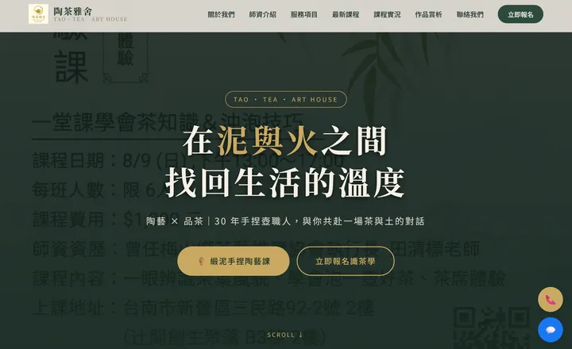
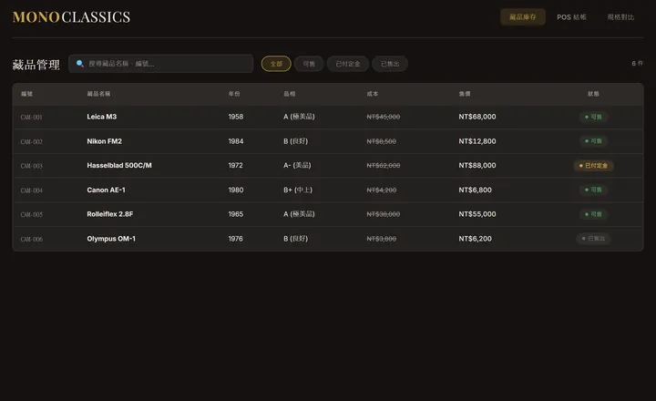
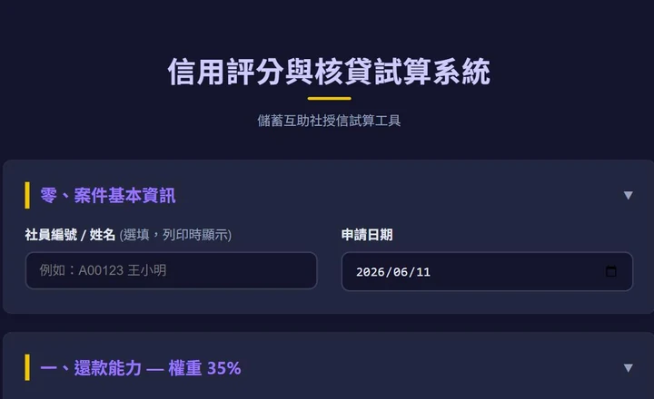
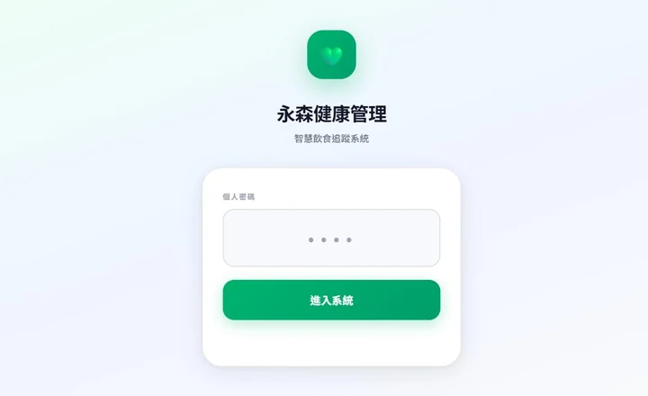
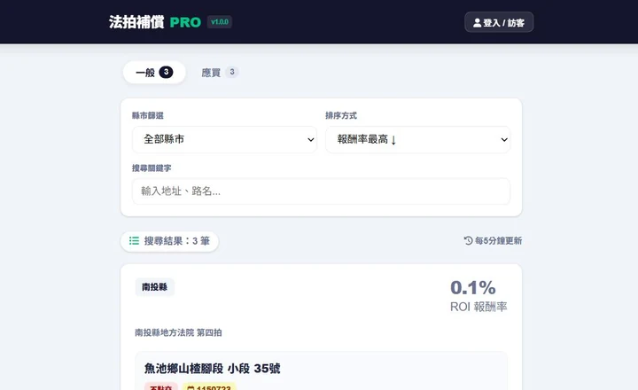
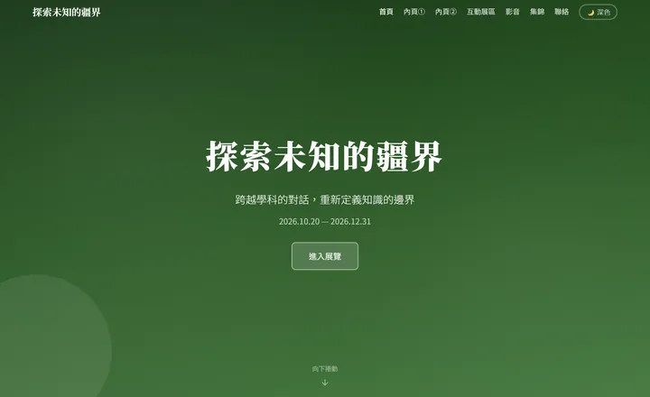
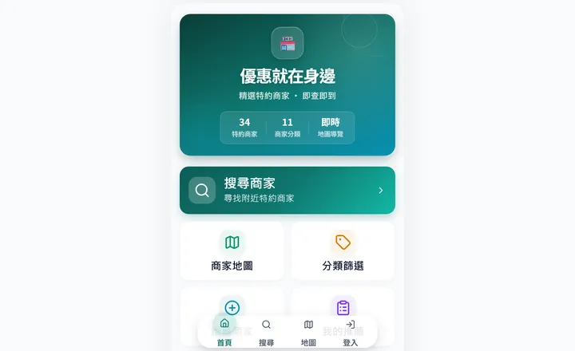
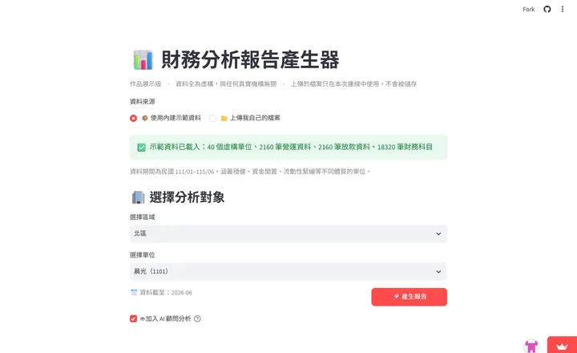

我是 Wind。從茶藝教室、古董相機電商、金融授信到健身 App——靠 AI Agent，不同產業的案子我都能接下來做完，而且用你聽得懂的話跟你討論。
↓ 往下看作品9 件已上線作品，橫跨教育、零售、金融、健康、不動產、藝文、企業內部 7 個產業








六大優勢，讓你放心把專案交給我
用 AI 協助開發，交付更快、成本更低，省下的都回饋給你。
你選工具，我負責交付。不綁定特定框架，選最適合你的方案。
不賣弄技術名詞，用你聽得懂的方式解釋方案與進度。
7 個產業的案子都是從零摸熟你的作業流程再動手，你不用先找到「做過你這行的工程師」。
正式合作有保障，大型專案可分期，權益白紙黑字寫清楚。
不會接了就消失，後續維護、迭代、新需求都能長期配合。
從零到一，從一頁式網站到跨系統整合